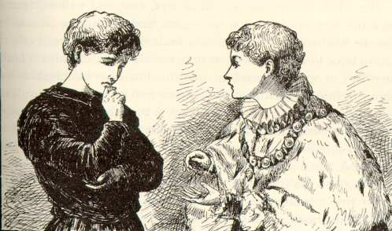

From The Prince and the Pauper
Chapter 3"...But tell me of thy Offal Court. Hast thou
a pleasant life there?"
"In truth, yes, so please you, sir, save when one is
hungry. There be Punch-and-Judy shows, and monkeys--oh,
such antic creatures! and so bravely dressed!--and there be
plays wherein they that play do shout and fight till all
are slain, and 'tis so fine to see, and costeth but a
farthing--albeit 'tis main hard to get the farthing, please
your worship."
"Tell me more."
"We lads of Offal Court do strive against each other
with the cudgel, like to the fashion of the 'prentices,
sometimes."
The prince's eyes flashed. Said he, "Marry, that would I
not mislike. Tell me more."
"We strive in races, sir, to see who of us shall be
fleetest."
"That would I like also. Speak on."
"In summer, sir, we wade and swim in the canals and in
the river, and each doth duck his neighbor, and spatter him
with water, and dive and shout and tumble and"--
"'Twould be worth my father's kingdom but to enjoy it
once! Prithee go on."
"We dance and sing about the Maypole in Cheapside; we
play in the sand, each covering his neighbor up; and times
we make mud pastry--oh, the lovely mud, it hath not its
like for delightfulness in all the world!--we do fairly
wallow in the mud, sir, saving your worship's
presence."
"Oh, prithee, say no more, 'tis glorious! If that I
could but clothe me in raiment like to thine, and strip my
feet, and revel in the mud once, just once, with none to
rebuke me or forbid, meseemeth I could forego the
crown!"
"And if that I could clothe me once, sweet sir, as thou
art clad--just once"--
"Oho, wouldst like it? Then so shall it be. Doff thy
rags, and don these splendors, lad! It is a brief
happiness, but will be not less keen for that. We will have
it while we may, and change again before any come to
molest."
A few minutes later the little Prince of Wales was
garlanded with Tom's fluttering odds and ends, and the
little Prince of Pauperdom was tricked out in the gaudy
plumage of royalty. The two went and stood side by side
before a great mirror, and lo, a miracle: there did not
seem to have been any change made! They stared at each
other, then at the glass, then at each other again. At last
the puzzled princeling said,
"What dost thou make of this?"
"Ah, good your worship, require me not to answer. It is
not meet that one of my degree should utter the thing."
"Then will I utter it. Thou hast the same hair,
the same eyes, the same voice and manner, the same form and
stature, the same face and countenance, that I bear. Fared
we forth naked, there is none could say which was you, and
which the Prince of Wales. And, now that I am clothed as
thou wert clothed, it seemeth I should be able the more
nearly to feel as thou didst when the brute soldier--Hark
ye, is not this a bruise upon your hand?"
"Yes, but it is a slight thing, and your worship knoweth
that the poor man-at-arms"--
"Peace! It was a shameful thing and a cruel!" cried the
little prince, stamping his bare foot. "If the king--Stir
not a step still I come again! It is a command!"
In a moment he had snatched up and put away an article
of national importance that lay upon a table, and was out
at the door and flying through the palace grounds in his
bannered rags, with a hot face and glowing eyes. As soon as
he reached the great gate, he seized the bars, and tried to
shake them, shouting.
"Open! Unbar the gates!"
The soldier that had maltreated Tom obeyed promptly, and
as the prince burst through the portal, half-smothered with
royal wrath, the soldier fetched him a sounding box on the
ear that sent him whirling to the roadway, and said,
"Take that, thou beggar's spawn, for what thou got'st me
from his highness!
The crowd roared with laughter. The prince picked
himself out of the mud, and made fiercely at the sentry,
shouting,
"I am the Prince of Wales; my person is sacred; and thou
shalt hang for laying thy hand upon me!"
The soldier brought his halberd to a present-arms and
said mockingly, "I salute your gracious highness." Then
angrily, "Be off, thou crazy rubbish!"
Here the jeering crowd closed around the poor little
prince, and hustled him far down the road, hooting him, and
shouting, "Way for his royal Highness! Way for the Prince
of Wales!"
|